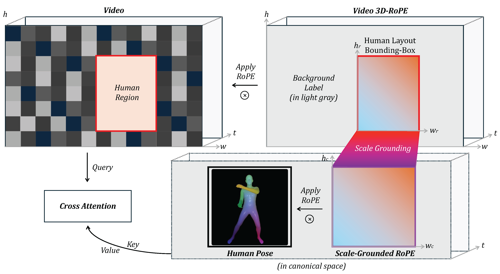

Method


We propose ONE-SHOT, a parameter-efficient framework for compositional human-environment video generation.
Our key insight is to factorize the generative process into disentangled signals. Specifically, we introduce a canonical-space injection mechanism that decouples human dynamics from environmental cues via cross-attention. The proposed Dynamic-Grounded-RoPE, a novel positional embedding strategy that establishes spatial correspondences between disparate scenes without any heuristic 3D alignments.
To support long-horizon synthesis, we introduce a Hybrid Context Integration mechanism to maintain subject and scene consistency across minute-level generations. Experiments demonstrate that our method significantly outperforms state-of-the-art methods, offering superior structural control and creative diversity for video synthesis.

Freely compose scene, identity, motion, and camera into new videos.
City·Hepburn·Walk
Road·Hepburn·Walk
SkiResort·Hepburn·Walk
Villa·Hepburn·Walk
Museum·Trump·TaiChi
BlueTown1·Trump·TaiChi
BlueTown2·Trump·TaiChi
Austria·Trump·TaiChi
GraffitiWall·Trump·Walk
GraffitiWall·JenHsun·Walk
GraffitiWall·Hepburn·Walk
GraffitiWall·Fengyuan·Walk
GraffitiWall·Siyu·Walk
Austria1·Trump·Walk
Austria1·JenHsun·Walk
Austria1·Hepburn·Walk
Austria1·Fengyuan·Walk
Austria1·Siyu·Walk
Museum·Trump·TaiChi
Museum·JenHsun·TaiChi
Museum·Hepburn·TaiChi
Museum·Fengyuan·TaiChi
Museum·Siyu·TaiChi
BlueBackground·JenHsun·ForwardCircle
BlueBackground·JenHsun·WalkForward
Museum·JenHsun·HandsUp
Museum·Hepburn·ForwardCircle
Museum·Hepburn·TaiChi
Museum·Hepburn·WalkRightLeft
Orbit around the subject
Dolly right
Dolly left
we have strong compatibility with the pretrained VFM and minimal loss of its native text-conditioned editing ability..
Doraemon
Sleek Robot Dog
American Shorthair Cat
Tiny Glowing Dragon
Floating Balloon-Dog Sculpture
Origami Crane Spirit
Tiny Enchanted Deer
Corgi
Trump in Office Room
Hepburn in Office Room
JenHsun in Garden
Fengyuan in Garden
@misc{yang2026oneshot,
title={ONE-SHOT: Compositional Human-Environment Video Synthesis via Spatial-Decoupled Motion Injection and Hybrid Context Integration},
author={Fengyuan Yang and Luying Huang and Jiazhi Guan and Quanwei Yang and Dongwei Pan and Jianglin Fu and Haocheng Feng and Wei He and Kaisiyuan Wang and Hang Zhou and Angela Yao},
year={2026},
eprint={2604.01043},
archivePrefix={arXiv},
primaryClass={cs.CV},
url={https://arxiv.org/abs/2604.01043}
}